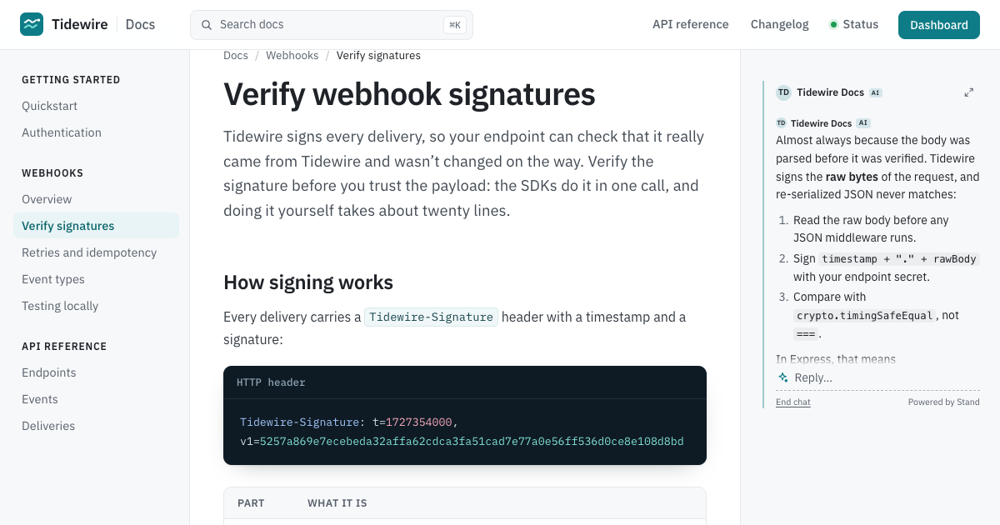
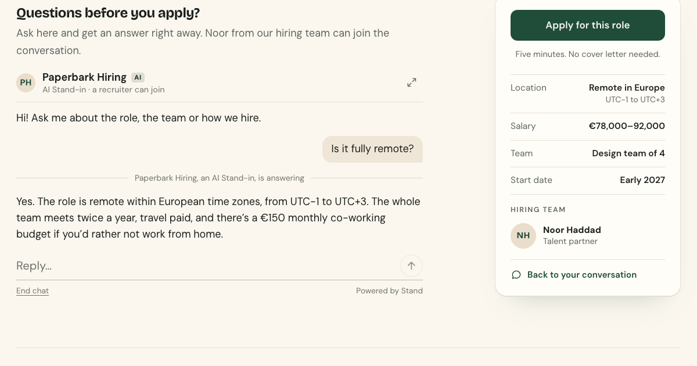
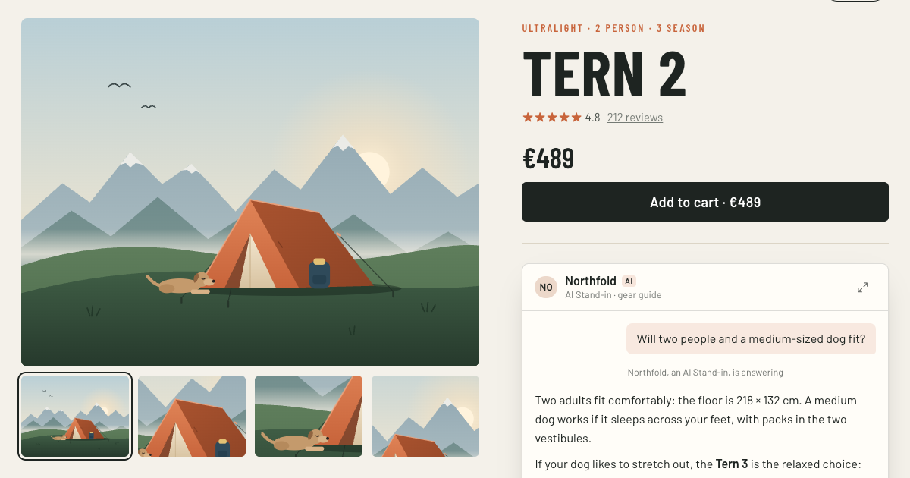
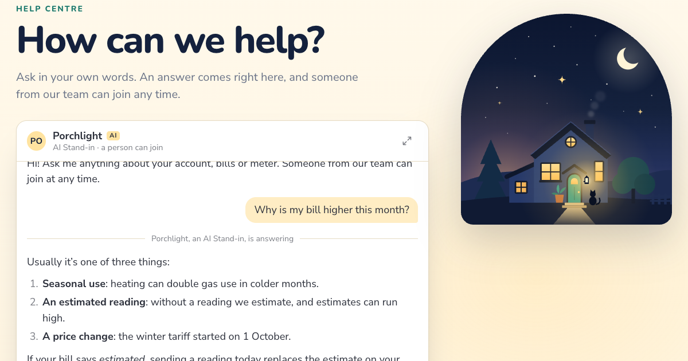
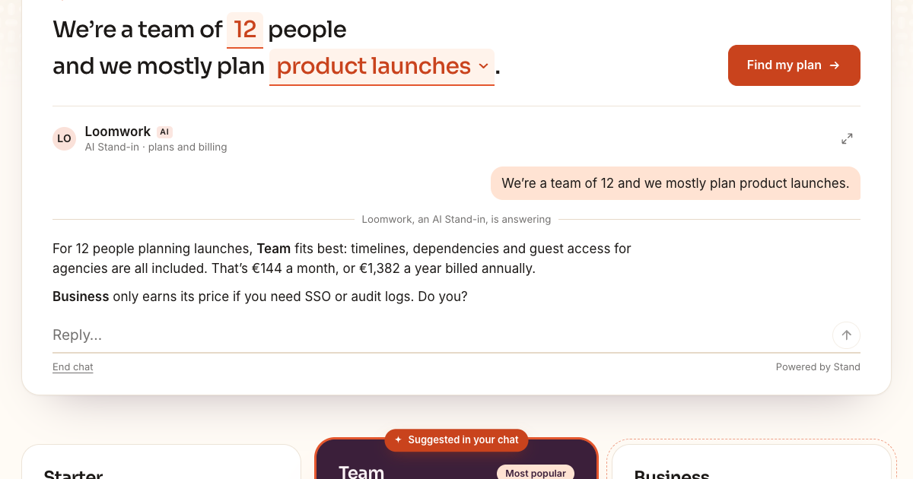
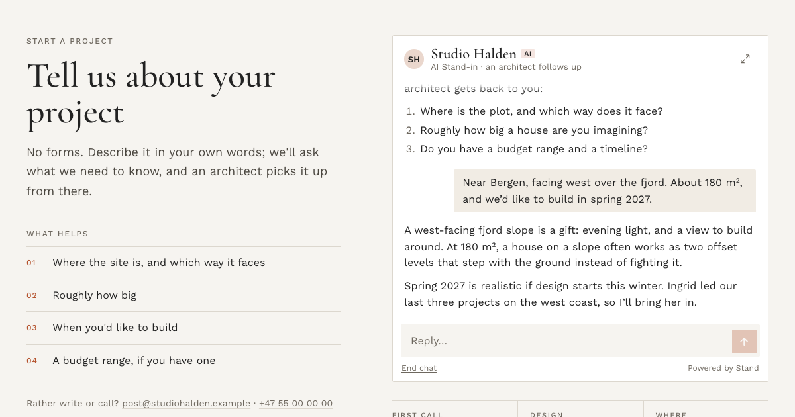
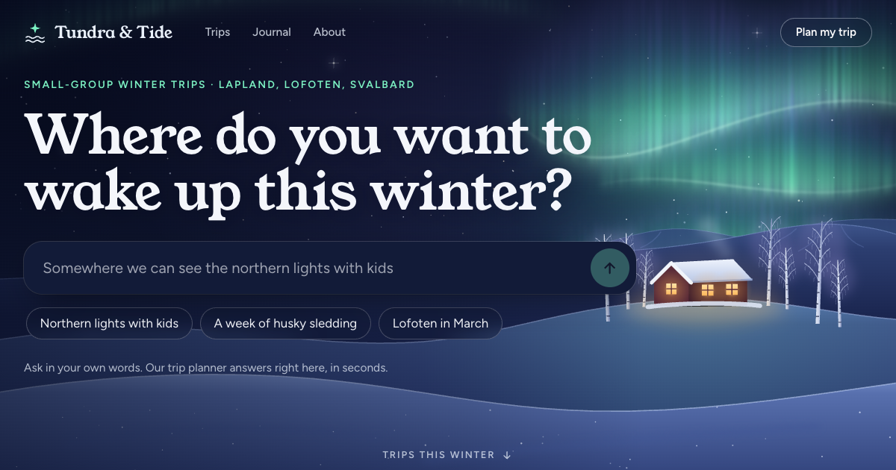

Unfold
The conversation grows in place and pushes the page down. Past a set height it scrolls inside, so it never takes over. grow="unfold"
Stand Chat add-on · Custom chat UI
Stand Inline puts the whole conversation right where the question comes up: beside the docs, under a product, in your hero. It starts as quietly as a line of text, and grows with the conversation.
Then it grows
The conversation grows in place and pushes the page down. Past a set height it scrolls inside, so it never takes over. grow="unfold"
When the visitor scrolls on to specs or reviews, a small dock keeps the latest reply and a reply box at hand. grow="follow"
The first message lifts the conversation into a focused view over the page. Escape puts it back where it was. grow="focus"
Studio
Pick a page, choose how present the chat should be and how it grows, match it to the brand, and copy the code. The preview plays a scripted sample; switch to Live to talk with Stand's demo Stand-in.
In context
Each one is a complete page for a made-up business, from the quietest placement to the loudest. Every chat on them is live, and each has a scripted sample to watch.

DocsA whisper in the margin of developer docs. Select any sentence to ask about it.
Job postThe last line of the post answers back, and the hiring team joins when it matters.
Product pageThe last question before the cart, answered under the price. It follows you to the reviews.
Help centerSearch that answers, with a person from customer care one message away.
PricingYour own fill-in-the-blanks starter, and a conversation that highlights the right plan.
ContactA conversation instead of a contact form, picked up by an architect.
Hero conciergeThe hero is the conversation, and the first message takes the whole screen.Everything here was generated by Claude Opus 5.5 at max effort in Claude Code, in a single session, from the prompt below: the element and its protocol client, the studio, the seven example pages and their illustrations. One follow-up message asked for this note.
We share it because an AI coding agent can now build a high-fidelity chat front end on top of Stand Chat. Stand keeps the routing, the AI Stand-ins, the handoff to your team and the history. The interface can be anything you can describe.
Add a custom chat UI to the examples collection that is easy to embed in context. While
stand-cardonly starts a chat, this should keep the whole conversation in context, a bit like the one at the top of stand.chat/guide/custom-chat-ui.Differences to that example:
- It should be more polished: actually a great tool for many different purposes on a site.
- Make it customizable: easy to adapt to any style.
- Find innovative variations, from a barely noticeable start that grows progressively during the chat, to impossible to ignore on the page.
Come up with 5–10 different use cases or contexts where it can be used, and generate an example of each. If needed, make one page for each (under the same example), or make it more like a studio for tuning the experience.
This should feel like a polished add-on product to Stand Chat, not a one-off experiment. Something people would actually like to use on their sites to get their visitors chatting.
site="demo" answers from localhost, so the agent tried the API before designing anything and saw what replies really look like: Markdown, system cards, and typing events that arrive a moment before the answer.Building your own? Start from the guide's copyable brief for coding agents, add your design brief and your Site ID, and ask for screenshots along the way.
How it works
<stand-inline> is a custom chat UI for Stand, built on Stand's visitor API. It doesn't load stand.js or open a widget: it finds who can answer, starts the conversation on the visitor's first message, and shows it right there in your page. Stand still routes it, runs your AI Stand-ins, lets your team take over, and keeps the history.
Copy stand-inline.js and stand-visitor.js to your site, next to each other. Then:
<script type="module" src="/stand-inline.js"></script>
<stand-inline site="YOUR-SITE-ID" look="field" placeholder="Ask about this product"></stand-inline>Your Site ID is in the installation snippet under Sites in Stand. It's a public identifier, not a secret. Until you have one, site="demo" connects to Stand Chat's demo Stand-in on any domain, including localhost. That's what every chat on these pages uses.
look | Before anyone types | Good for |
|---|---|---|
whisper | A line of text with a spark and a dashed underline. The conversation becomes a thread. | Docs, articles, the margin |
line | A sentence-sized prompt on a rule. | The end of a job post, an FAQ, a story |
field | A box that reads like search. It unfolds into the conversation. | Product pages, help centers |
card | A contained panel with who's answering, the greeting and suggestions. | Where a contact form would go |
stage | The greeting is the headline, with a big box and suggestions. | Heroes and landing pages |
grow="unfold" (the default) grows in place and scrolls inside past --si-max-height. grow="follow" also docks the conversation to the bottom of the screen while it's scrolled out of view. grow="focus" lifts it into a focused view on the first message, or on a later one with focus-at="3". Every look can open the focused view from its header.
site | Your Stand Site ID. Required. |
|---|---|
placeholder | The box's placeholder. Several, separated by |, are typed out in turn. |
greeting | An opening line from whoever answers: the card's first message, the stage's headline, and a hint above the other looks when the visitor starts typing. Saved as the first message of the conversation. |
suggestions | Up to six questions, separated by |. A click sends one. |
prompt | Private context for whoever answers, up to 2,000 characters. Visitors don't see it, but it's in your HTML: never put secrets in it. |
analytics-id | Names the placement in Stand's analytics. |
scope | Elements with the same site and scope share one conversation, which follows the visitor from page to page. Without it, that's the whole site, like Stand's widget. Give a product line or a section its own scope to keep its conversations apart. |
ask-selection | A CSS selector. Selecting text inside it offers Ask about this, which attaches the quote to the next message. |
visitor-id, visitor-name | Your signed-in user's ID and name for new conversations. Unverified metadata, never authentication. |
label | The message box's accessible name, when the placeholder isn't a good one. |
reply-placeholder, no-expand | The placeholder once the chat has started, and hiding the full-view button. |
hidden | Keeps it hidden until someone can answer, like <stand-button hidden>. A wrapper marked data-stand-reveal works too. |
Two slots: <h1 slot="headline"> brings your own headline to the stage look, and <div slot="offline"> shows when nobody can answer. Without it, the element hides.
It takes its font, size and text color from the page and reads the page's background, so it fits in before you change anything. Set one accent to match your brand, and go further with custom properties and parts:
stand-inline {
--si-accent: #C8643B; /* send button, focus, your bubbles */
--si-radius: 6px;
--si-surface: #FFFDF8; /* panels, the dock, the focused view */
--si-max-height: 60vh; /* then the transcript scrolls */
font-size: 16px; /* everything scales with it */
}
stand-inline::part(send) { border-radius: 4px; }
stand-inline::part(headline) { font-family: 'Young Serif', serif; }
stand-inline[data-state="conversation"] { margin-block: 2rem; }Properties: --si-accent, --si-accent-ink, --si-ink, --si-muted, --si-line, --si-tint, --si-page, --si-surface, --si-visitor-bg, --si-visitor-ink, --si-radius, --si-leading, --si-shadow, --si-max-height, --si-stage-size, --si-stage-weight, --si-font, --si-mono and --si-code-bg (code in replies), --si-selection-bg and --si-selection-ink (the Ask about this button), and --si-z.
Parts (::part(dialog)::backdrop styles the page behind the focused view): root, headline, conversation, header, avatar, name, badge, status, transcript, message, visitor, host, bubble, author, system, link-card, suggestions, suggestion, composer, input, send, footer, attribution, dock, dialog, sheet.
The element reflects its state on itself, so the page around it can follow the conversation with CSS alone:
data-state: loading, idle, conversation, elsewhere (another element on the page holds the conversation) or offline.data-phase: the conversation's own phase, for example active or ended. data-depth counts the visitor's messages.data-responder: ai or person, which changes on a handoff. data-expanded is there while the focused view is open.const chat = document.querySelector('stand-inline');
// Start the conversation from your own UI.
findPlanButton.addEventListener('click', () => chat.ask(`We're a team of ${size}.`));
// React to it: highlight what the conversation recommends.
chat.addEventListener('stand-inline-message', (event) => {
const { from, text } = event.detail; // from: 'visitor', 'ai' or 'person'
if (from !== 'visitor') highlightPlans(text);
});ask(text), focus(), expand(), collapse(), end(). Properties: draft, quote, state, and strings to translate every label.stand-inline-available, -start, -message, -responder (a person or an AI took over), -end, -expand, -collapse, and -reset: a conversation restored after a reload, or replaced, doesn't replay its messages, so read el.state then.stand-visitor.js implements Stand's visitor API contract and has no DOM code, so you can reuse it with React or anything else:
StandChat.initiallyHideChatButton(). The two keep separate conversations.color-mix() and <dialog>. In an iframe, a conversation lasts for that page only.npx degit standchat/examples/stand-inline my-stand-inlineYou need stand-inline.js and stand-visitor.js. The rest is the studio (studio.js, samples.js) and the seven example pages.